Khan Academy relies on donations to keep free, world-class education accessible to millions. As part of Design for America’s IDEA program, I redesigned its web donation flow to replace a cold, transactional checkout with a transparent experience.

01 Overview
However, it wasn't pulling its weight. Why does the current donation flow feel like an afterthought instead of a place people want to give to?
Our team redesigned everything in the donation flow from the first step of choosing the donation amount to visualizing real outcomes and leading with gratitude, rebuilding trust one step at a time.
This redesign focuses on first-time and hesitant donors — the group most likely to abandon the flow before giving at all.
02 Problem
When we first encountered Khan Academy’s donation flow, two assumptions kept coming up:
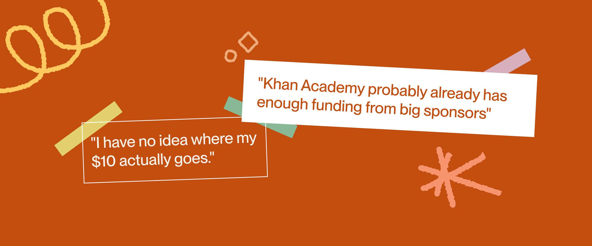
The existing flow didn't answer either question — it just asked for a card number. The transactional donor experience was losing Khan Academy out on many small but still impactful one-time donations.
This distrust is further amplified by the current donation flow.
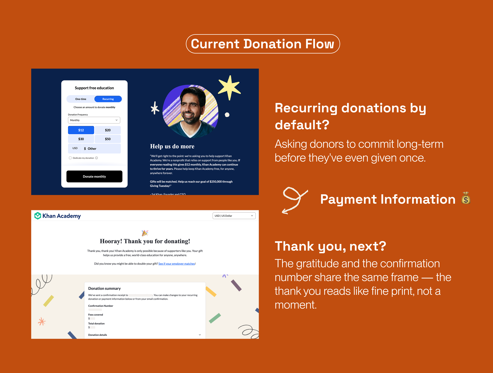
By treating donations as a transactional rather than a moment of connection, the design created friction and doubt.
03 Research
Through secondary research, we dug into what actually drives someone to open their wallet for a cause. Four factors kept surfacing:
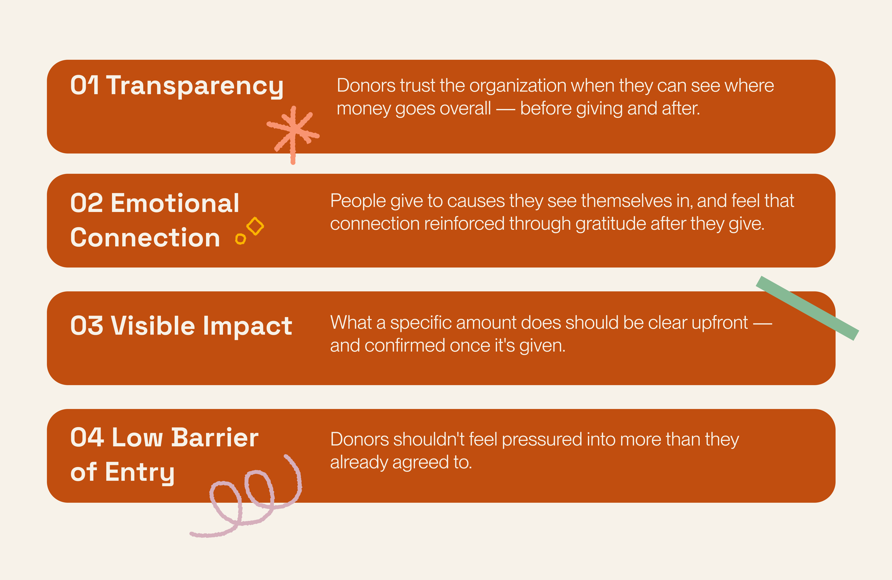
These four pillars guided our next steps as we explored ways to design a more engaging and transparent donation experience for Khan Academy.
04 Process
We explored different ideation directions, iterating on structure and flow. Any idea that didn't map to the previous four pillars were cut, converging on our final iterations .
Ultimately, we chose to prioritize the smallest possible ask with the clearest possible impact — a one-time default donations paired with amounts tied to real outcomes, even knowing Khan Academy loses some of the predictability recurring gifts provide.
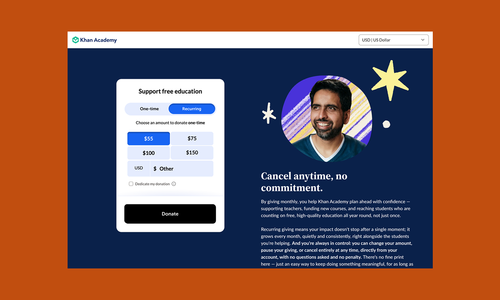
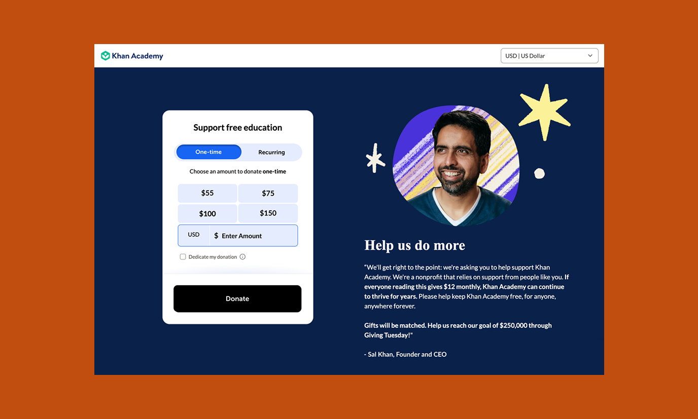
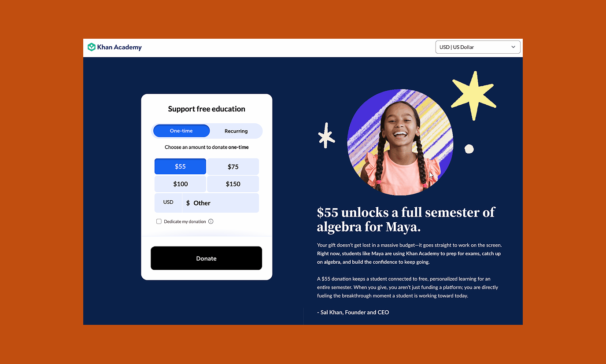
05 Solution
Recurring was the default. That's a big ask before someone's even given once.
We flipped it — one-time first, with donation amounts tied to real impact, so
donors could see exactly what their gift meant and did.
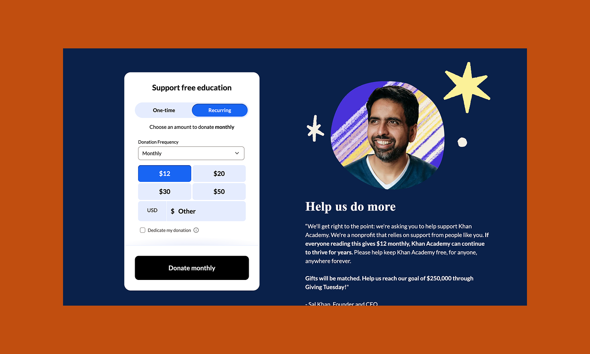
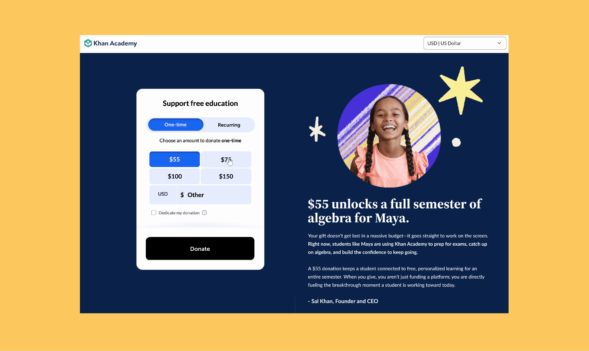
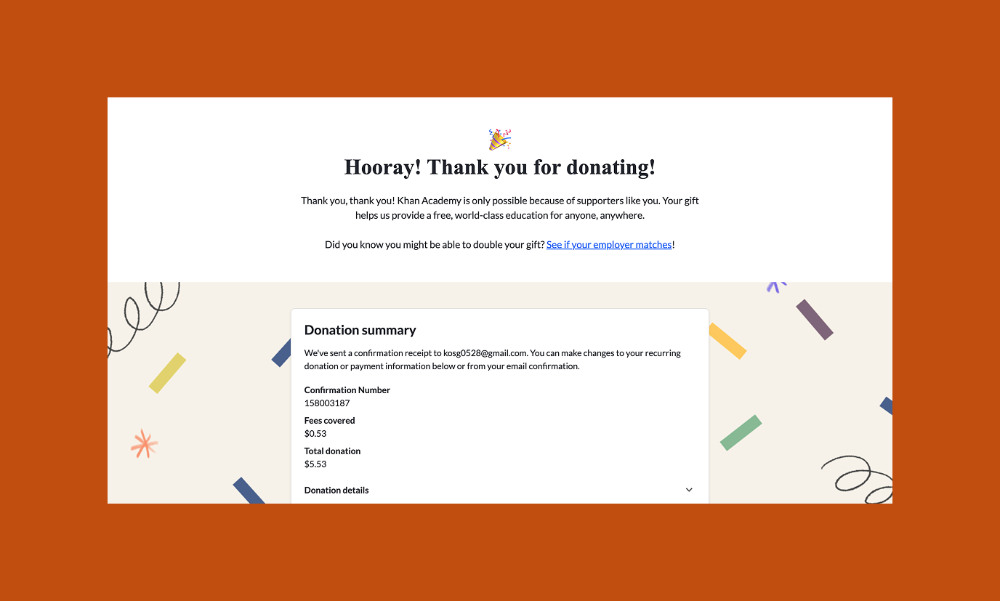
Donors used to land on a cold confirmation number the second they gave: now, we gave gratitude
its own moment.
The confetti animation further makes the impact feel real and enhances the
donor’s feeling of accomplishment. The receipt is still there, just no longer sharing the
spotlight.
The Learner's Fund is Khan Academy's annual donor community — originally linked on the donation page,
competing with a donor's first decision.
We moved it after the thank you and added suggested amounts, so nothing competes with that first ask.
This means donors who already want to give annually take one extra step to find it — a tradeoff we made for
donors who arrive still deciding.
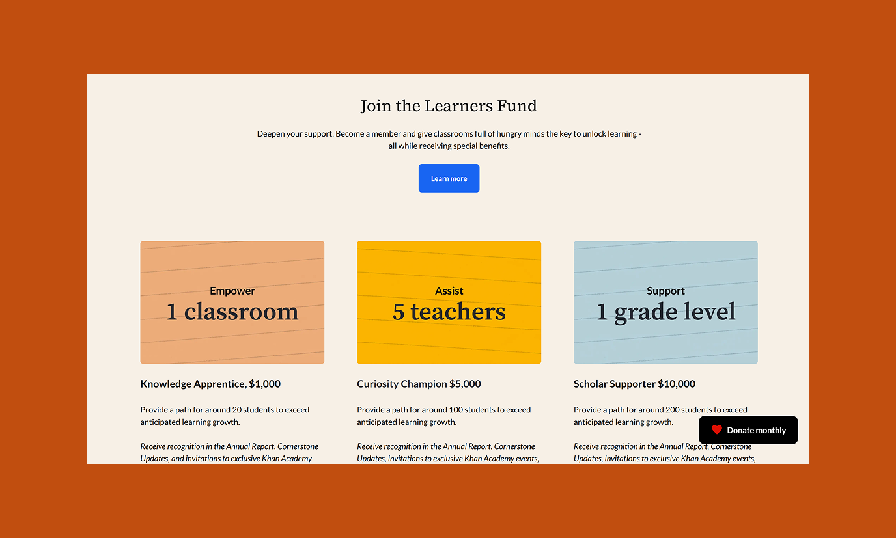
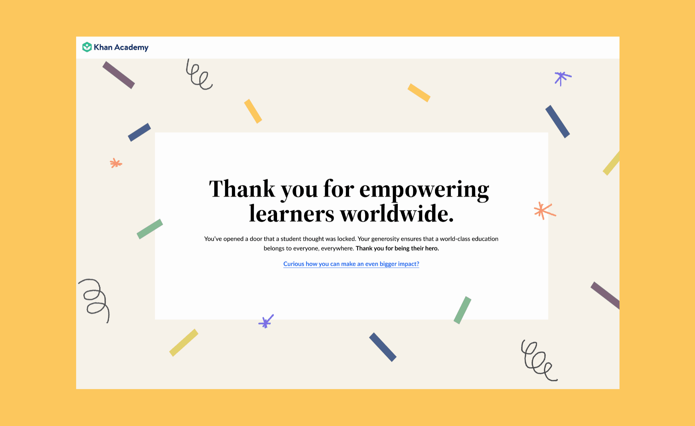
06 Reflection
In this redesign, we didn’t focus on reducing the default donation amount, as we knew money was likely not
the problem. The real drop-off wasn't friction — it was doubt. Donors weren't unsure how to give, they were
unsure their $10 mattered.
I learned that order changes meaning. Moving the thank you before the receipt didn't add a feature, it
changed how giving felt — from a transaction to a moment of gratitude.
If you’ve designed for nonprofits before, I’d love to chat!
Thank you for reading :)